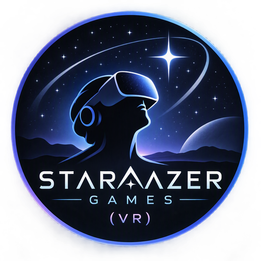

Creating immersive VR and multiplayer worlds from Western Australia
Stargazer Games is an independent game development studio based in Perth, Western Australia. Focused on Virtual Reality, multiplayer experiences, and innovative gameplay, the studio combines decades of professional software development expertise with a passion for interactive entertainment.
Hi, I'm Trevor Gall, founder of Stargazer Games.
After a long career as a commercial software developer and IT professional, I retired to pursue a lifelong passion for game development. Today I create indie games using modern tools such as Godot and Unreal Engine, with a particular interest in virtual reality, multiplayer systems, immersive storytelling, and innovative gameplay mechanics.
My background in enterprise software development brings a strong engineering focus to game creation, combining robust technical solutions with player-centric design.
Stargazer Games is actively developing virtual reality experiences for Meta Quest and PC VR platforms, with a focus on accessible, engaging gameplay and social multiplayer interaction.
Current developments include VR arcade experiences, immersive exploration games, and experimental multiplayer concepts built using the Godot Engine.
For enquiries, collaboration opportunities, or game feedback, please contact:
Stargazer Games
Perth, Western Australia